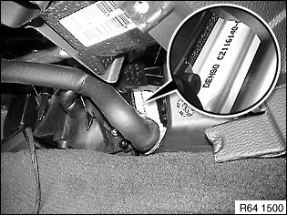
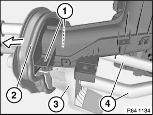
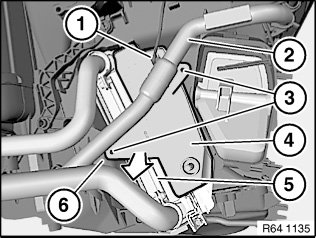
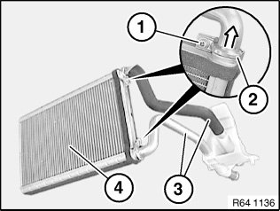
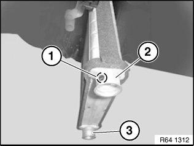

64 11 208 Replacing Heater Core
64 11 208 Replacing Heat Exchanger
Special tools required:

IMPORTANT:
Determine manufacturer of installed heat exchanger (Denso or Behr) before ordering spare parts.
Remove trim panel for pedal assembly.
Installation:
Up to 12/2009 pipes must be replaced as well.
From 01/2010 pipes are automatically integral parts of the repair kit.
Refer to Electronic Parts Catalogue.

Necessary preliminary tasks:
- Remove heater

Release screws (1).
Slide rubber grommet (1) with foam seal forward slightly.
Carefully feed pipe holder (3) with pipes (4) past rubber grommet (2).
Installation:
If necessary, replace rubber grommet (1) and/or foam seal.
Make sure rubber grommet (1) is correctly seated on pipe holder (3).

If necessary, remove coolant hose (2).
Release screws (3) and remove cover.
NOTE:
Diesel version only:
Unfasten plug connection (1) and disconnect.
Withdraw electric auxiliary heater (4) in direction of arrow.

Remove heat exchanger (5) from heater/air conditioner (6).
Release screws (1) and slide screw clamps (2) forwards slightly.
Remove pipes (3) from heat exchanger (4).
Installation:
Replace sealing rings.
Use special tool 00 9 030 to mount sealing rings without damaging them.

IMPORTANT:
Inflow connection (3) may only be positioned at the bottom.
When installing, make sure that the return-flow connection (2) (larger opening) marked with a black dot (1) is positioned at the top.
Inflow connection (3) accordingly may only be positioned at the bottom.